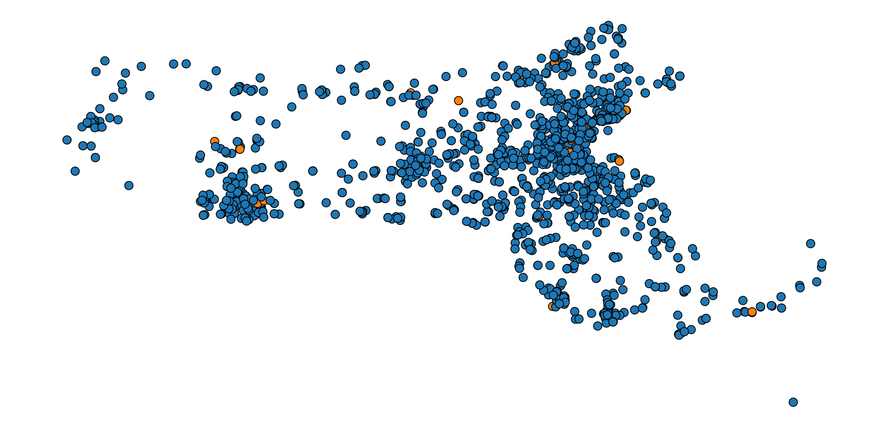

Explanation of Visualization (above)
Run python3 -m http.server 8888 & from the schooldsproject directory to see the visualization. Each point represents a school in Massachusetts. The blue dots are public schools and the orange are charter schools. They're arranged by
latitude and longitude. To create the scale, we got a rough estimate of the max/min longitudes and latitudes of Massachusetts. Then we created
a linear scale to convert them to fit on the width of the #chart element. Mousing over a dot reveals the name of the school it represents. This data is only from the year 2013, but we hope to do something similar to Health and Wealth of Nations to display all years and allow the user to change between years.
Other features we plan on adding:
- a zoom function, because some areas, such as Boston, have a lot of schools and it is hard to distinguish them because they're all piled on top of each other.
- a radius proportional to school population
- on mouseover to display more stats about the school/highlight schools that are similar based on certain characteristics.
Data Cleaning Difficulties
Because we changed the scope of our project pretty significantly when at our midterm report, we have since run into a couple difficulties, specifically with cleaning, that are explained below:
- Data sets from multiple sources have posed one of the more difficult issues. While most of our data come from the massachusetts data repositories, we got information about the type of school (charter or not) grade span of schools (elementary, middle, high) and latitude and longitude from a national data repository.
- Integrating the data from these two sources has proven to be incredibly difficult. The ids that are assigned to each school don't match, and the strings for the names of the schools are also not guaranteed to be the same. Thus matching schools across data sets is going to be one of our biggest challenges going forward. We plan on using jaccard similarities to resolve difference in school names, and to take the school ids from the state level, since they are guaranteed to be unique
- Furthermore, even within the datasets there are problems. From year to year, school names aren't guaranteed to be the same, which is something we're working on resolving also using jaccard similarities. Moreover, the id system the state uses changed in 2006 (our data span from 2002-2014) and so we had to find a consistent system of ids to use.
- Last, we're dealing with some missing data issues that result from schools not reporting scores or the data not being available for a given year, even though it is for other years. We're still thinking about how to resolve this and what strategies we can use moving forward to avoid problems around this issue. Moral of the story: education data is hard to work with!
Alternate Image of Visualization
